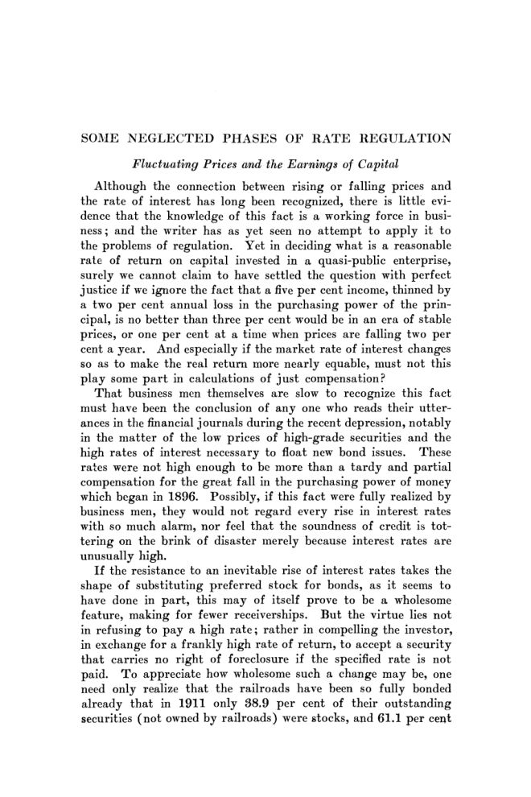

Clark, 1914: o retorno justo quando o dólar encolhe
Leitura: 8 min
Clark mostrou que um retorno de 5% com preços subindo 2% ao ano vale 3% e pediu que a regulação considerasse a inflação e tratasse como renda os lucros reinvestidos pelas ferrovias.


J. Maurice Clark, do Amherst College, abre com uma conta que qualquer investidor poderia fazer. Uma renda de 5%, corroída por uma perda anual de 2% no poder de compra do principal, não vale mais que 3% numa época de preços estáveis, ou 1% numa época em que os preços caem 2% ao ano. A relação entre preços e juros era conhecida havia muito tempo. O que Clark não encontrava era alguém que a aplicasse aos problemas da regulação.
A pergunta é prática. Para decidir qual é o retorno razoável do capital investido numa empresa de serviço público, seria preciso saber se a taxa de mercado compensa ou não a variação do valor da moeda.
Por que os homens de negócios não percebiam?
Clark lê nas revistas financeiras da depressão recente a queixa contra os preços baixos dos títulos de primeira linha e os juros altos exigidos para lançar novas emissões. Para ele, esses juros eram uma compensação tardia e parcial pela grande queda do poder de compra do dinheiro iniciada em 1896. Se os empresários entendessem isso, talvez não vissem em cada alta de juros um sinal de que o crédito estava à beira do desastre.
Uma reação das ferrovias foi trocar títulos de dívida por ações preferenciais. Clark vê nisso algo saudável, que poderia reduzir as concordatas, desde que a virtude não estivesse em recusar o juro alto, mas em fazer o investidor aceitar, por um retorno francamente alto, um papel sem direito de execução.
Outra reação foi tomar emprestado por notas de curto prazo, contando refinanciá-las mais barato quando a restrição passasse. Clark, escrevendo em maio de 1914, admite que a aposta parecia dar certo. Mas pergunta o que aconteceria se a restrição viesse sobretudo de um dólar que encolhe, e se ele continuasse encolhendo. Financiar equipamento permanente com notas de curto prazo, diz, é sempre arriscado.
Clark não nega os ciclos de negócios, que cita a partir da obra de Wesley C. Mitchell. Mas sobre eles se sobrepõem movimentos mais longos, ligados à oferta de metal em relação à demanda industrial, ao volume de trocas e à eficiência do crédito. A grande alta de preços de mais de quinze anos parecia contida; se a pausa fosse temporária, os juros continuariam altos, e não era seguro apostar que a era dos preços altos tinha acabado.
O que muda para o regulador?
O empresário, observa Clark, tem desculpa melhor para ignorar essas coisas do que o regulador, porque não se espera que cuide do bem-estar alheio. O juiz ou o comissário de serviços públicos, ao contrário, carrega a responsabilidade oficial e trata de uma questão de justiça.
Os árbitros de disputas salariais nas ferrovias já davam aumentos com base no custo de manter um padrão razoável de conforto e deixavam à Interstate Commerce Commission a tarefa de autorizar tarifas mais altas para pagá-los. Nada parecido acontecia com o investidor. Se houvesse um padrão independente de justiça para ele, equivalente ao padrão de vida do assalariado, numa era de preços subindo mais de 3% ao ano o investidor deveria receber 3 pontos a mais do que com preços estáveis, e 6 a mais do que com preços caindo no mesmo ritmo.
Na prática, porém, o padrão de retorno justo é tomado da taxa de mercado: busca-se o mínimo necessário para atrair capital privado na quantidade exigida. Mesmo assim, essa regra daria mais ao investidor em épocas de alta prolongada de preços, ao menos tanto quanto o próprio mercado. O risco que Clark aponta é outro: que o padrão judicial se torne rígido e ignore até os movimentos mais longos. Ele chega a imaginar um ajuste automático pelo número-índice ou um padrão tabular para juros e principal, mas acha a ideia pouco útil enquanto não for adotada também nos títulos das outras indústrias.
Onde estava o dividendo escondido?
A segunda parte trata dos lucros reinvestidos. As ferrovias fizeram grandes melhorias com seus ganhos, muitas vezes lançadas como despesa operacional; a própria alegação de que não estavam supercapitalizadas dependia desses acréscimos ao ativo. Ao mesmo tempo, usavam os dividendos baixos em dinheiro como prova de que seus retornos não tinham sido altos, e queriam cobrar no futuro dividendos sobre os bens assim acumulados.
“Queriam comer o bolo e continuar com ele, como quem não quereria, se pudesse?” (“They would eat their cake and have it too-as who would not if he could”)
O sistema de contas imposto pela Interstate Commerce Commission depois da lei de 1906 dificultou essa ocultação. Em 1911, a comissão recusou à Burlington o direito à taxa corrente de dividendos sobre os US$ 530 milhões que a ferrovia reivindicava como valor presente, menos da metade coberta pelo investimento original e US$ 76 milhões registrados como excedente. O teste adotado foi prático: o excedente só seria protegido se pudesse render dividendos sem aumento de tarifas. Se a diretoria decorasse os restaurantes das estações com quadros de grandes mestres, brinca Clark, esse investimento só teria direito a dividendos se eles pudessem ser ganhos com as tarifas antigas.
Clark nota que o teste ignora o dólar que encolhe, e levanta uma hipótese. Talvez, antes do aperto da regulação, os dividendos em dinheiro tenham sido baixos demais quando vistos isoladamente, mas complementados pelas melhorias pagas com lucros, e os reguladores se acostumaram a eles como suficientes. Se agora essa parte da renda era posta em dúvida, as ideias de retorno razoável baseadas nos dividendos passados teriam de ficar mais generosas.
Quem fiscaliza as melhorias pagas com lucros?
Clark não condena o reinvestimento, só seu uso para escapar da regulação. O acionista que deixa lucros na empresa não deveria ganhar privilégios que perderia se os sacasse em dinheiro e subscrevesse novas ações. Entre esses privilégios está a dispensa de mostrar necessidade pública: novas empresas e, às vezes, novas obras dependem de um certificado de conveniência e necessidade, mas não há regra parecida para melhorias pagas com lucros. Se a vigilância deve acompanhar a tentação, ela deveria ser mais estrita, e não mais frouxa, onde o dinheiro vem mais fácil.
O remédio não seria copiar os métodos usados para novas emissões. A avaliação das ferrovias, que a Interstate Commerce Commission passara a ter poder de fazer, deveria decidir não só o custo razoável da propriedade, mas também se as instalações são razoavelmente necessárias ao serviço pelo qual o público paga.
“O governo corre sempre o risco de usar um martelo a vapor para quebrar uma noz.” (“Government is ever in danger of using a steam hammer to crack a walnut.”)
Clark resume três conclusões. Se o ouro continuar se depreciando, os retornos razoáveis terão de ser mais altos que os habituais, e mais baixos se os preços passarem a cair. Se as melhorias pagas com lucros tiverem direito a dividendos, devem contar como dividendos para fins de regulação, o que justificaria um retorno total maior. E, nesse caso, devem ser fiscalizadas com o mesmo cuidado aplicado ao dinheiro levantado por novas emissões.
Na minha leitura
Na minha leitura, o texto antecipa com clareza a distinção entre taxa nominal e taxa real de retorno aplicada à regulação. Clark percebe que um retorno justo fixado em termos nominais transfere renda entre usuário e investidor sempre que o nível de preços muda, e que a regra de seguir a taxa de mercado só corrige isso na medida em que o próprio mercado incorpore a inflação esperada.
A segunda parte é um argumento de contabilidade e incentivos. Lucro reinvestido é renda, e tratá-lo como despesa esconde o retorno verdadeiro do regulador; reconhecê-lo como base de dividendos futuros, sem fiscalização, convida ao investimento excessivo. É o mesmo problema que mais tarde a literatura chamaria de viés de capital da regulação por taxa de retorno.
Glossário
- Retorno real
- retorno de um investimento descontada a variação do poder de compra da moeda.
- Ação preferencial
- ação com prioridade no recebimento de dividendos, em geral limitados, sem direito de execução se não forem pagos.
- Dívida consolidada (funded debt)
- dívida representada por títulos de longo prazo.
- Melhorias (betterments)
- investimentos que ampliam ou melhoram uma instalação, distintos da simples reposição.
- Padrão tabular
- pagamento de dívidas corrigido por um número-índice de preços.
- Certificado de conveniência e necessidade
- autorização prévia do poder público para criar ou ampliar um serviço regulado.
- Usado e útil (used and useful)
- princípio de que só entram na base de remuneração os bens efetivamente empregados no serviço público.
Fontes
- Some Neglected Phases of Rate Regulation — J. Maurice Clark, Amherst College (pp. 565–574). JSTOR · Internet Archive (PDF)
- Edição completa, com os demais artigos: Nº 131 do Arquivo.
Documento em domínio público (EUA, publicado antes de 1931), via JSTOR Early Journal Content e Internet Archive. Resumo e comentário do autor deste site, sem afiliação com a American Economic Association. Encontrou um erro? Escreva: a correção é publicada no próprio texto, com data.
← Ripley, 1914: quando a diluição do capital derruba o serviço ↑ Nº 131 · Setembro de 1914: títulos ferroviários, lucros ocultos e o Panamá